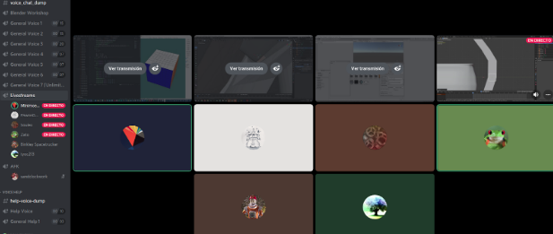

Analisar el prep para mostrar el fraude desde la comidad de la casa

my first ever study group experience and the invitation to do it yourself! and feel the edge!
Lowering SiLU operation in Pytorch/XLA
Audio y estudio autodidacta
Cómo reconocer las buenas ideas de investigación
follow up from having locally installed xla
tools and env vars needed to compile xla locally with GPU support
A tutorial of fastpages for Jupyter notebooks.
Como reconocer los dígitos de la competición https://www.kaggle.com/c/digit-recognizer